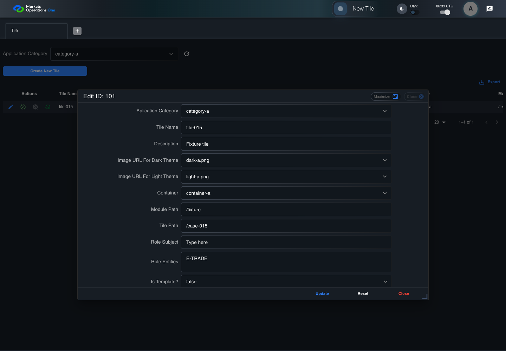
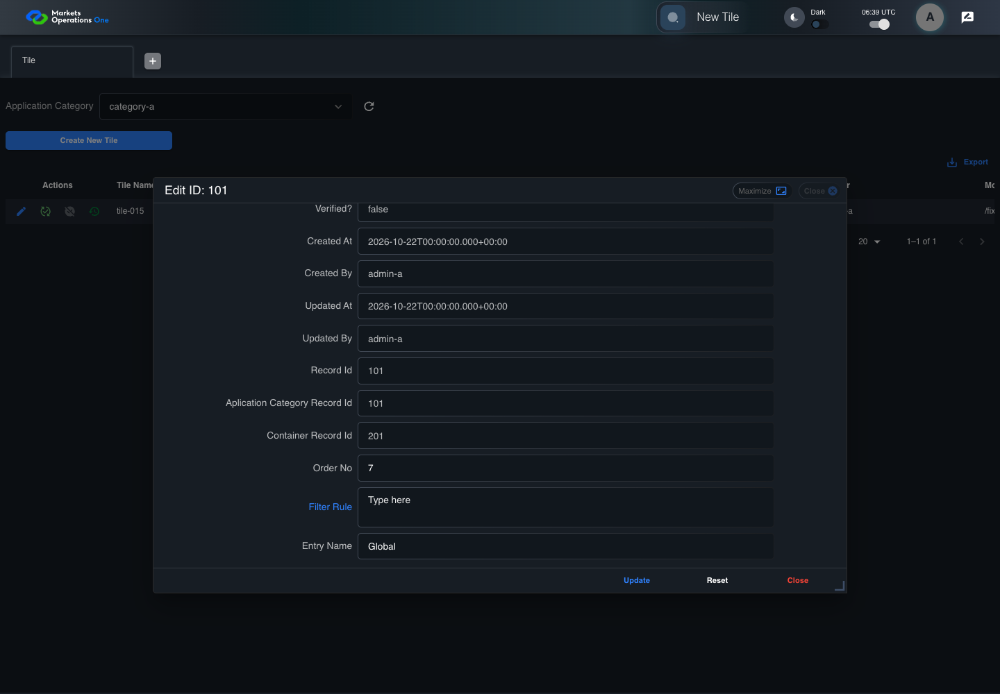
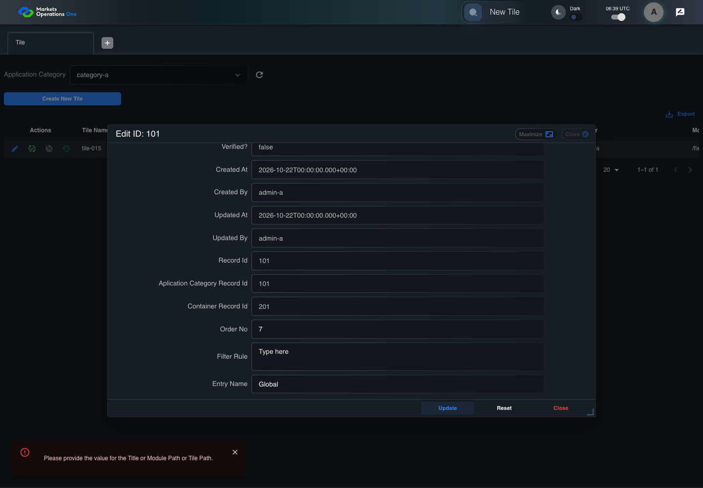

BFF-ADM-015 current BFF administration through actual UI
PASS · application/run-072/bff-adm-015-current-bff-administration-through-actual-ui-8ce938e91397-attempt-1 · ACTUAL_APPLICATION_LOCAL_SERVICES
Actual current React and exact-current BFF admin controllers/services/JPA with actual migration DDL in disposable PostgreSQL. Controlled OUD/EMS2 identities and local Spring bootstrap. Fixture SQL seeds/mutates isolated records; service errors are actual database errors. Undefined agreed messages remain unresolved acceptance.
2026-10-22T06:39:39.777Z to 2026-10-22T06:39:45.486Z
Assertions and result · Artifact manifest · Exact run inputs and source hashes
Result SHA-256:04c76885ff638050a94354b38319cee44ae90658396407a93793230f57807c2aMachine observations
- actual-identity-projection.json
f379964efde684689b97e33aa8006f6d138bb9ec01b6d4423b76137c45cbb811 - baseline-inputs.json
446086dd8ae65cb0b27e1d1020aa2b5dcec578906006bf960f6bee6ce386e65c - bff-boundary.json
7fa09db87592f7109b2daa7d6263dfdb991203c6c21f8713a04df1b9c939f9e7 - committed-ui-submission-comparisons.json
ba130d175bac6ea20c7fe30b5061709124dddf424cc1563ae55c636b61a70ca7 - empty-filter-rule-representation.json
932e94dcd181770eb2db0b82d1ff998695d65d4fb3c27f8ac37eaabcf66eca85 - fixture-step-10.json
831f3315694fb4a3ed83dcf3d7244abdf3a27d5bb61790129f6b337411f0e231 - fixture-step-11.json
6c95b08c323f0cb719a2c0ec4d99c2064f7d1160a7c272642121492371fe67d3 - fixture-step-6.json
46f65c0dc8950771d16fc730b3c66d81c52ed12633493e70b80c65ef64cf218b - fixture-step-7.json
d878db08bd847ec0ab693f2fdfe5edf1a6fd0519abbd01028cd598739c6792df - fixture-step-8.json
92276c2545d7651eb43392809f646d424d2fd8688e77fa6d77028b67abadfd83 - fixture-step-9.json
320ee18c07511af7da10862bcc9ee3c1554338cc0819d9ca11d5d01d4995100c - initial-persisted-records.json
337879825c4fb40d89782cc4c7dc9db1abba8a2b422e95f38f5dbc98d83ce050 - persisted-after-submit.json
6dbde9b8a7e1d87d32d121a4c453be6dbf9f5ea7bc548b7aa4cde2b12cf1420f - reference-snapshot-3.json
a1b0ff79291b1909ba36c4bf1b320ded1d8fc69998b3ec2f4f8df1bb9a3e532b - reference-snapshot-4.json
c96986908481995d290adc97c1c03f56618ca09e39ae0917318f39ba36bde589 - ui-origin-bff-requests.json
3e0995d64f90c30020cd33fb39c8712b767f199b22811034c4f064f7789737aa
Screenshot capture: CAPTURED. Named frames: 23.
Step screenshot evidence: COMPLETE. 22/22 canonical steps have execution screenshots.
Canonical step timeline
Given Admin A uses subject "admin-a" with role "FMO_ADMIN" in an isolated authenticated browser
Execution: PASSED.1. step-01 Visible state after step 1: Given Admin A uses subject "admin-a" with role "FMO_ADMIN" in an isolated authenticated browser
2026-10-22T06:39:41.506Z · 1440×1000
Step: /Users/lushevol/code/github/ratan-release-impact/workbench/tasks/ui-test-coverage-20261022/test-cases.md:15264
SHA-256:7a7f7b8f2d6e474badd536a9d7e7c97b9811976e05da2ff261e46fcf5ae96ffeAnd the controlled Tile fixture records the initial grid rows and persisted values
Execution: PASSED.2. step-02 Visible state after step 2: And the controlled Tile fixture records the initial grid rows and persisted values
2026-10-22T06:39:41.622Z · 1440×1000
Step: /Users/lushevol/code/github/ratan-release-impact/workbench/tasks/ui-test-coverage-20261022/test-cases.md:15265
SHA-256:1825d23a1f1289d10f246423ce288fb5c9b13814c8b217c87ff1d9ea8210a02cAnd Category 101 has label "category-a" and Import Map 201 has Module Name "container-a"
Execution: PASSED.3. step-03 Visible state after step 3: And Category 101 has label "category-a" and Import Map 201 has Module Name "container-a"
2026-10-22T06:39:41.654Z · 1440×1000
Step: /Users/lushevol/code/github/ratan-release-impact/workbench/tasks/ui-test-coverage-20261022/test-cases.md:15266
SHA-256:b5acf1470c31320baba1dae2ec85cb502a5012e916a661b5a94a7a6f98a241f5And both references belong to "FMO_ADMIN" and the Tile page category filter value is Category 101
Execution: PASSED.
4. step-04 Visible state after step 4: And both references belong to "FMO_ADMIN" and the Tile page category filter value is Category 101
2026-10-22T06:39:41.688Z · 1440×1000
Step: /Users/lushevol/code/github/ratan-release-impact/workbench/tasks/ui-test-coverage-20261022/test-cases.md:15267
SHA-256:b5acf1470c31320baba1dae2ec85cb502a5012e916a661b5a94a7a6f98a241f5And the Tile grid has record "101" owned by "FMO_ADMIN"
Execution: PASSED.
5. step-05 Visible state after step 5: And the Tile grid has record "101" owned by "FMO_ADMIN"
2026-10-22T06:39:41.721Z · 1440×1000
Step: /Users/lushevol/code/github/ratan-release-impact/workbench/tasks/ui-test-coverage-20261022/test-cases.md:15268
SHA-256:45d03cedbf807c198bb126dba850e3a257aa3d2169e547ba225610b14d138c7fAnd the baseline fixture data defines "Tile Name" as "tile-015"
Execution: PASSED.6. step-06 Visible state after step 6: And the baseline fixture data defines "Tile Name" as "tile-015"
2026-10-22T06:39:41.759Z · 1440×1000
Step: /Users/lushevol/code/github/ratan-release-impact/workbench/tasks/ui-test-coverage-20261022/test-cases.md:15269
SHA-256:45d03cedbf807c198bb126dba850e3a257aa3d2169e547ba225610b14d138c7fAnd the baseline fixture data defines "Module Path" as "/fixture"
Execution: PASSED.7. step-07 Visible state after step 7: And the baseline fixture data defines "Module Path" as "/fixture"
2026-10-22T06:39:41.840Z · 1440×1000
Step: /Users/lushevol/code/github/ratan-release-impact/workbench/tasks/ui-test-coverage-20261022/test-cases.md:15270
SHA-256:75bc593467e692be48da699a8f21686e171d1a9d7ef7176cdd7e753a19f3ee59And the baseline fixture data defines "Tile Path" as "/case-015"
Execution: PASSED.8. step-08 Visible state after step 8: And the baseline fixture data defines "Tile Path" as "/case-015"
2026-10-22T06:39:41.912Z · 1440×1000
Step: /Users/lushevol/code/github/ratan-release-impact/workbench/tasks/ui-test-coverage-20261022/test-cases.md:15271
SHA-256:7c704cae87f966b91aaaa5f84317816a790cdfc35c7c0ff80bb8c74389165864And the baseline fixture data defines "Role Entities" as "E-TRADE"
Execution: PASSED.9. step-09 Visible state after step 9: And the baseline fixture data defines "Role Entities" as "E-TRADE"
2026-10-22T06:39:41.972Z · 1440×1000
Step: /Users/lushevol/code/github/ratan-release-impact/workbench/tasks/ui-test-coverage-20261022/test-cases.md:15272
SHA-256:763bdcb9a9aadb1ece8a1a117ef1456d37e96b32bac6ddbd28e7610d1482c23cAnd the baseline fixture data defines "Filter Rule" as ""
Execution: PASSED.10. step-10 Visible state after step 10: And the baseline fixture data defines "Filter Rule" as ""
2026-10-22T06:39:42.038Z · 1440×1000
Step: /Users/lushevol/code/github/ratan-release-impact/workbench/tasks/ui-test-coverage-20261022/test-cases.md:15273
SHA-256:964031b90061c4e8f600879b7b4dc4737fe6d9bb42c9947fa7057554ed806e20And the baseline Tile references use "Aplication Category" "category-a" and "Container" "container-a"
Execution: PASSED.11. step-11 Visible state after step 11: And the baseline Tile references use "Aplication Category" "category-a" and "Container" "container-a"
2026-10-22T06:39:42.089Z · 1440×1000
Step: /Users/lushevol/code/github/ratan-release-impact/workbench/tasks/ui-test-coverage-20261022/test-cases.md:15274
SHA-256:7e109224eaf7c63973230eb04f67328beac72b6d141d08cabbcd7d0eeb07de20When Admin A clicks the button labeled "Edit" in the Tile grid row with "Record Id" "101"
Execution: PASSED.
12. step-12 Visible state after step 12: When Admin A clicks the button labeled "Edit" in the Tile grid row with "Record Id" "101"
2026-10-22T06:39:42.368Z · 1440×1000
Step: /Users/lushevol/code/github/ratan-release-impact/workbench/tasks/ui-test-coverage-20261022/test-cases.md:15275
SHA-256:6330b561f8871716929963515790f8fe3c6a6fc2de8c71d2c63eda1bc9dd2c2cThen the dialog titled "edit ID: 101" is visible on the Tile administration page
Execution: PASSED.13. step-13 Visible state after step 13: Then the dialog titled "edit ID: 101" is visible on the Tile administration page
2026-10-22T06:39:42.422Z · 1440×1000
Step: /Users/lushevol/code/github/ratan-release-impact/workbench/tasks/ui-test-coverage-20261022/test-cases.md:15276
SHA-256:4ddb6c2a15024da8a86235239063e6b6babb8eb5adcd47b45c5af9e84204ce3dWhen Admin A fills the textbox labeled "Tile Name" with "tile-015" in dialog "edit ID: 101"
Execution: PASSED.14. step-14 Visible state after step 14: When Admin A fills the textbox labeled "Tile Name" with "tile-015" in dialog "edit ID: 101"
2026-10-22T06:39:42.852Z · 1440×1000
Step: /Users/lushevol/code/github/ratan-release-impact/workbench/tasks/ui-test-coverage-20261022/test-cases.md:15277
SHA-256:669abde279ceb4d12f2635170566a85f6bbe0c9536bc74731de8732c5f110a21And Admin A fills the textbox labeled "Module Path" with "" in dialog "edit ID: 101"
Execution: PASSED.15. step-15 Visible state after step 15: And Admin A fills the textbox labeled "Module Path" with "" in dialog "edit ID: 101"
2026-10-22T06:39:43.276Z · 1440×1000
Step: /Users/lushevol/code/github/ratan-release-impact/workbench/tasks/ui-test-coverage-20261022/test-cases.md:15278
SHA-256:5451c1784cea6300e4b7a4f3fcc8e199a2f76ff5dcea850e4c387a4906e32233And Admin A fills the textbox labeled "Tile Path" with "/case-015" in dialog "edit ID: 101"
Execution: PASSED.16. step-16 Visible state after step 16: And Admin A fills the textbox labeled "Tile Path" with "/case-015" in dialog "edit ID: 101"
2026-10-22T06:39:43.703Z · 1440×1000
Step: /Users/lushevol/code/github/ratan-release-impact/workbench/tasks/ui-test-coverage-20261022/test-cases.md:15279
SHA-256:c4fc71c8769dd14c5dadd8b8419864bbd3ef81c8526162534a86dc453dd8ab0bAnd Admin A fills the textarea labeled "Role Entities" with "E-TRADE" in dialog "edit ID: 101"
Execution: PASSED.17. step-17 Visible state after step 17: And Admin A fills the textarea labeled "Role Entities" with "E-TRADE" in dialog "edit ID: 101"
2026-10-22T06:39:44.138Z · 1440×1000
Step: /Users/lushevol/code/github/ratan-release-impact/workbench/tasks/ui-test-coverage-20261022/test-cases.md:15280
SHA-256:b52afa882a3b65518bd5dd1479aeff28b7f895dc563643716a7eb7605ed20578And Admin A fills the textarea labeled "Filter Rule" with "" in dialog "edit ID: 101"
Execution: PASSED.
18. step-18 Visible state after step 18: And Admin A fills the textarea labeled "Filter Rule" with "" in dialog "edit ID: 101"
2026-10-22T06:39:44.568Z · 1440×1000
Step: /Users/lushevol/code/github/ratan-release-impact/workbench/tasks/ui-test-coverage-20261022/test-cases.md:15281
SHA-256:edc52e3c1edac2722b61aa143e0c32c898bdfcaa6e21c974eace4422ce861e9eAnd Admin A clicks the button labeled "Update" in dialog "edit ID: 101"
Execution: PASSED.19. step-19 Visible state after step 19: And Admin A clicks the button labeled "Update" in dialog "edit ID: 101"
2026-10-22T06:39:44.833Z · 1440×1000
Step: /Users/lushevol/code/github/ratan-release-impact/workbench/tasks/ui-test-coverage-20261022/test-cases.md:15282
SHA-256:deafefc92b7915c3e89d8c6e9e86d1bc39767321e41b0aa432dea1495a06ff99Then the dialog titled "edit ID: 101" remains visible on the Tile administration page
Execution: PASSED.20. step-20 Visible state after step 20: Then the dialog titled "edit ID: 101" remains visible on the Tile administration page
2026-10-22T06:39:44.885Z · 1440×1000
Step: /Users/lushevol/code/github/ratan-release-impact/workbench/tasks/ui-test-coverage-20261022/test-cases.md:15283
SHA-256:854ba4f13f3c2427fad4997367903ac0baae8afaf6c96a4a0470b981e844dc55And the alert with severity "error" in the portal snackbar contains the exact text "Please provide the value for the Title or Module Path or Tile Path."
Execution: PASSED.21. step-21 Visible state after step 21: And the alert with severity "error" in the portal snackbar contains the exact text "Please provide the value for the Title or Module Path or Tile Path."
2026-10-22T06:39:44.943Z · 1440×1000
Step: /Users/lushevol/code/github/ratan-release-impact/workbench/tasks/ui-test-coverage-20261022/test-cases.md:15284
SHA-256:b474b0fc4b8e1f52a1ef1738e657d5b309952b4839b70a395a82d7ac896f6296And the Tile data grid with column "Record Id" row identifiers and loaded field values equal the initial grid snapshot on the Tile administration page
Execution: PASSED.
22. step-22 Visible state after step 22: And the Tile data grid with column "Record Id" row identifiers and loaded field values equal the initial grid snapshot on the Tile administration page
2026-10-22T06:39:45.062Z · 1440×1000
Step: /Users/lushevol/code/github/ratan-release-impact/workbench/tasks/ui-test-coverage-20261022/test-cases.md:15285
SHA-256:695b008e08d3df13fccc2bd12c826e10cafb0ad06cbf2cb525085c9563fcb43a
Additional named frames
Screenshots establish visible state only. Assertions and traces support functional claims.